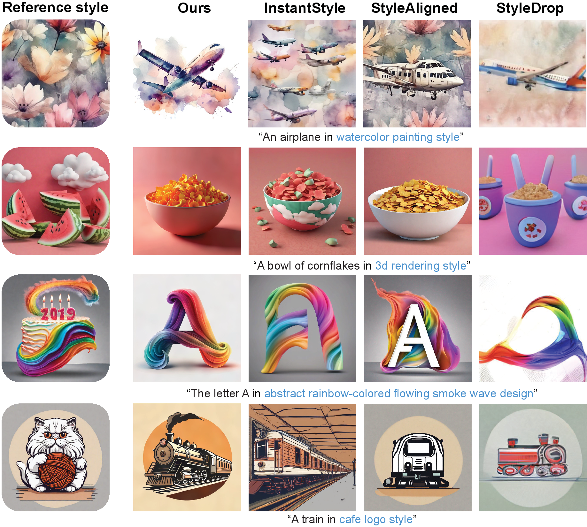

RB-Modulation: Training-Free Stylization
using Reference-Based Modulation
Litu Rout1,2 Yujia Chen2 Nataniel Ruiz2
Abhishek Kumar3 Constantine Caramanis1 Sanjay Shakkottai1Wen-Sheng Chu2
1 University of Texas, Austin 2 Google 3 Google DeepMind
ICLR 2025 (Oral: 1.8% acceptance ratio)
[Paper]
[OpenReview]
[ArXiv]
[Code]
[Demo]

Given a single reference image (rounded rectangle), our method RB-Modulation offers a training-free plug-and-play solution for (a) stylization, and (b) content-style composition with various prompts while maintaining sample diversity and prompt alignment. For instance, given a reference style image (e.g. “melting golden 3d rendering style”) and content image (e.g. (A) “dog”), our method adheres to the desired prompts without leaking contents from the reference style image and without being restricted to the pose of the reference content image.
Abstract
We propose Reference-Based Modulation (RB-Modulation), a new plug-and-play solution for training-free personalization of diffusion models. Existing trainingfree approaches exhibit difficulties in (a) style extraction from reference images in the absence of additional style or content text descriptions, (b) unwanted content leakage from reference style images, and (c) effective composition of style and content. RB-Modulation is built on a novel stochastic optimal controller where a style descriptor encodes the desired attributes through a terminal cost. The resulting drift not only overcomes the difficulties above, but also ensures high fidelity to the reference style and adheres to the given text prompt. We also introduce a cross-attention-based feature aggregation scheme that allows RB-Modulation to decouple content and style from the reference image. With theoretical justification and empirical evidence, our framework demonstrates precise extraction and control of content and style in a training-free manner. Further, our method allows a seamless composition of content and style, which marks a departure from the dependency on external adapters or ControlNets.
Contributions
- We present reference-based modulation (RB-Modulation), a novel stochastic optimal control framework that enables training-free, personalized style and content control, with a new Attention Feature Aggregation (AFA) module to maintain high fidelity to the reference image while adhering to the given prompt (§4).
- We provide theoretical justifications connecting optimal control and reverse diffusion dynamics. We leverage this connection to incorporate desired attributes (e.g., style) in our controller’s terminal cost and personalize T2I models in a training-free manner (§5).
- We perform extensive experiments covering stylization and content-style composition, demonstrating superior performance over SoTA methods in human preference metrics (§6).
Stylization Results
In the third row, StyleAligned and StyleDrop generate a wine bottle and book resembling the smartphone in the reference style image. In the last row, StyleAligned leaks the house and the background of the reference image; InstantStyle exhibits color leakage from the house, resulting in similar-colored images. Our method accurately adheres to the prompt in the desired style.

A comparison with state-of-the-art methods (InstantStyle [13], StyleAligned [12], StyleDrop [11]) highlights our advantages in preventing information leakage from the reference style and adhering more closely to the desired text prompts.
Content-Style Composition Results
Among training-free methods, InstantStyle and IP-Adapter rely on ControlNet [22], which often constrains their ability to accurately follow prompts for changing the pose of the generated content, such as illustrating “dancing” in (b), or “walking” in (c). In contrast, our method avoids the need for ControlNet or adapters, and can effectively capture the distinctive attributes of both style and content images while adhering to the prompt to generate diverse images.

Our method shows better prompt alignment and greater diversity than training-free methods IP-Adapter [21] and InstantStyle [13], and have competitive performance with training-based ZipLoRA [10].
Ablation Study
Our method builds on any transformer-based diffusion model. In this case, we use StableCascade [24] as the foundation, and sequentially add each module to show their effectiveness. DirectConcat involves concatenating reference image embeddings with prompt embeddings. Style descriptions are excluded in this ablation study.

We observe consistent improvements with the addition of AFA and SOC module, with the best results when combined.
User Defined Consistent Stylization
With no style description, our results demonstrate more diversity while following the desired prompts and effectively capturing the reference style. InstantStyle results show monotonous scenes and StyleAligned results suffer from severe information leakage. We report StyleDrop results for completeness and it is known to perform worse with no style description and a single training image [11].
Each column describes consistent style aligned generations based on user defined prompts.
Stylization with Style Descriptions
While the alternative methods face challenges like following the prompts (e.g., multiple airplanes instead of a single airplane) and information leakage (e.g., the clouds on the cornflake bowl and the guitar in the milkshake image), our method demonstrates strong performance on both prompt and style alignment. Style description is in blue.

Stylization without Style Descriptions
StyleAligned and StyleDrop show severe performance drop after removing the style descriptions (e.g., see fireman and cat images). InstantStyle results show more information leakage (e.g., the pink ladybug and leopard), whereas no obvious performance drop is observed in our results.

While the content of an image can be conveyed through text, articulating an artist’s unique style – characterized by distinct brushstrokes, color palette, material, and texture – is substantially more nuanced and complex. The above figure demonstrates that our method generates consistent stylized results with and without the style description. We believe our early results by RB-Modulation will pave the way for interesting future research along this direction.
Stylization with Hand Drawn Reference Style

Qualitative results for hand drawn reference style images. The proposed method is agnostic to real or generated reference images. Given hand drawn reference style images (e.g., “paint” from a commercial service provider) and desired text prompts (e.g., “a tiger”+style description), RB-Modulation captures the reference style in the generated content image.
Novel Style Synthesis using RB-Modulation

The interpolation strength parameter provides additional control for blending features from multiple reference styles (e.g., “a lighthouse in mosaic art style” → “a lighthouse in cyberpunk art style”). This highlights RB-Modulation’s capability to generate novel and previously unseen styles.
RB-Modulation with ControlNet

Qualitative results demonstrating compatibility with ControlNet (Zhang et al., 2023). Given the Canny edge map of a reference content and an image of a reference style, the proposed method effectively controls the pose of the generated samples while accurately capturing the desired style.
RB-Modulation with SDXL

Qualitative results using SDXL (Podell et al., 2023) as base model. This verifies the plug-and-play nature of RB-Modulation for training-free stylization.
A gallery of Stylization using RB-Modulation

BibTex
@inproceedings{rout2025rbmodulation,
title={RB-Modulation: Training-Free Stylization using Reference-Based Modulation},
author={Rout, L and Chen, Y and Ruiz, N and Kumar, A and Caramanis, C and Shakkottai, S and Chu, W},
booktitle={The Thirteenth International Conference on Learning Representations},
year={2025}
url={https://openreview.net/forum?id=bnINPG5A32}
}
Acknowledgements:
This research has been supported by NSF Grant 2019844, a Google research collaboration award, and the UT Austin Machine Learning Lab. Litu Rout has been supported by Ju-Nam and Pearl Chew Presidential Fellowship in Engineering and George J. Heuer Graduate Fellowship.